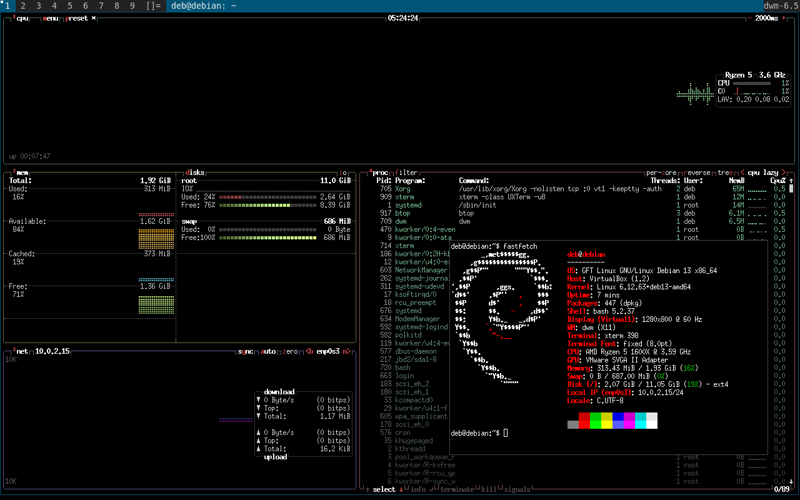
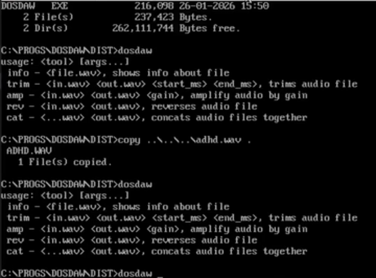

Our Software
Our software made here at The GFT Media Foundation is designed to keep you safe and efficient. Our programs are simple and user-friendly so that anyone can enjoy.
GFT Linux 1.0.0
A minimal, lightweight Debian-based Linux distribution which you get to customize. Internally developed at GFT Media, now released to the public. Click the title for more information.
Download ISO here

DosDAW
This is a DAW (Digital Audio Workstation) made for the x86 operating system MS-DOS developed by Microsoft. It is a user-friendly, free-to-use, commandline audio editor. Features include amplification, trimming, and more, coming with all of the features of a basic editor.
Download ZIP here
